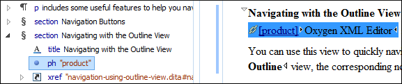
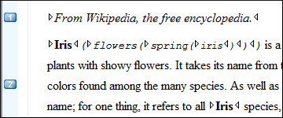

Oxygen XML Editor includes some useful features to help you navigate XML documents.
Navigation Keyboard Shortcuts
Tab
Navigate to the next XML node.
Tip: If you encounter a space-preserved
element when you navigate through a document and you do not press
another key, pressing the Tab key will continue the navigation. However, if the cursor is positioned in a
space-preserved element and you press another key or you position the
cursor inside such an element using the mouse, the Tab key can be used to arrange the
text.
Shift +
Tab
Navigate to the previous XML node.
Ctrl + RightArrow (Command +
RightArrow on OS X)
Navigate one word forward.
Ctrl + LeftArrow (Command + LeftArrow
on OS X)
Navigate one word backward.
Ctrl + Home (Command + Home on OS
X)
Position the cursor at the beginning of the document.
Ctrl + End (Command + End on OS
X)
Position the cursor at the end of the document.
Navigating to a Modification
Oxygen XML Editor includes some actions that help you to quickly navigate to a
particular modification. These navigation buttons are available in the main toolbar (they
can also be accessed from the Find menu):
Last Modification
Navigates to the last modification in any open tab.
Back
Navigates to the last selected editor tab or to the last selected element/content in
the current tab. You can also go back after clicking on links in
Text or Author mode.
Forward
Available after you use the Back button at least once, and it
navigates in the opposite direction as the Back button.
Navigating with the Outline View
Oxygen XML Editor includes an Outline
view that displays a hierarchical tag overview of the currently edited XML
Document.
You can use this view to quickly navigate through the current document by selecting nodes
in the outline tree. It is synchronized with the editor area, so when you make a selection
in the Outline view, the corresponding nodes are highlighted in the
editor area.
Figure 1. Outline View Navigation in Author Mode

Using the Breadcrumb to Navigate
A breadcrumbon the stripe at the top of the document indicates the path from document root to
the current element. It can also be used as a helpful tool to navigate to specific elements
throughout the structure of the document.
Figure 2. Breadcrumb in Author Mode
The last element listed in the breadcrumb is the element at the current cursor
position. The last element is also highlighted by a thin light
blue bar for easier identification. Clicking an element from the
breadcrumb selects the entire element and navigates to it in the editor area.
Using the Linking Support
When working on multiple documents that reference each other (references, external
entities, XInclude, DITA conref, etc.), the linking support is useful for navigating
between the documents. In the built-in frameworks that are bundled with Oxygen XML Editor, links are marked with the icon (or
the icon for key-based
references). When hovering over the icon, the mouse pointer changes its shape to indicate
that the link can be accessed and a tooltip presents the destination location. Click the
link to open the referenced resource in the editor or system browser. The same effect can be obtained by using the Document > File > Open file at cursor (Ctrl + Enter
(Command + Enter on OS X)) action when the cursor is inside a link element.
Note: Depending on the referenced file type, the target link will
either be opened in the Oxygen XML Editor or in the default system application. If
the target file does not exist, Oxygen XML Editor prompts you to create
it.
Navigating with Bookmarks
A position in a document can be marked with a bookmark. You can then quickly
go to the marked position with a keyboard shortcut or a menu action. This is useful when
navigating large documents or working on multiple documents where the cursor needs to move
between several marked positions. The bookmarks are displayed with a small icon
on the vertical strip to the left of the editor. You can place up to nine distinct
bookmarks in any document. Shortcut keys are available to navigate to any of
the marked positions (Ctrl+1 through
Ctrl+9). There are also shortcuts for
creating bookmarks (Ctrl+Shift+1 through
Ctrl+Shift+9). You can also configure these
shortcut keys in the Options > Menu Shortcut Keys menu.
Figure 3. Editor Bookmarks

To insert a bookmark in Author mode, do any of the
following:
Click in the vertical stripe on the left side of the editor (to the left of the line
number).
Press F9 on your keyboard or use any of
the specific bookmark creation shortcuts
((Ctrl+Shift+1 through
Ctrl+Shift+9).
Select the Create Bookmark action from the Edit > Bookmarks menu.
To remove bookmark in Author mode, do either of the following:
Left-click its icon in the vertical stripe.
Right-click its icon on the vertical stripe and select Remove
or Remove all (Ctrl+F7 (Command+F7
on OS X)).
To navigate to a specific bookmark, do either of the following:
Use any of the specific bookmark navigation shortcuts
(Ctrl+1 through
Ctrl+9).
Use one of the actions available on the Edit > Bookmarks > Go to menu.
Tip: The navigation shortcuts work even if the document where the
bookmark was inserted has been closed. In this case, using the shortcut will automatically
re-open the document.
 Back
Back Forward
Forward icon (or
the icon for key-based
references). When hovering over the icon, the mouse pointer changes its shape to indicate
that the link can be accessed and a tooltip presents the destination location. Click the
link to open the referenced resource in the editor or system browser. The same effect can be obtained by using the action when the cursor is inside a link element.
icon (or
the icon for key-based
references). When hovering over the icon, the mouse pointer changes its shape to indicate
that the link can be accessed and a tooltip presents the destination location. Click the
link to open the referenced resource in the editor or system browser. The same effect can be obtained by using the action when the cursor is inside a link element.